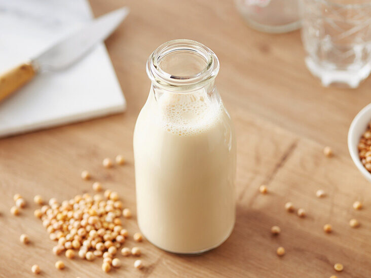

Soy Milk

Delicious milk althernative made from soybeans
Ingredients
- Soybeans
- Water
- Sugar (optional)
Directions
- Soak soybeans overnight
- Drain and add to blender with water
- Blend till almost smooth
- Strain in a pot with a nutmilk bag
- Boil and stir for 20 minutes
- Add sugar to taste
- Let cool and enjoy
Home